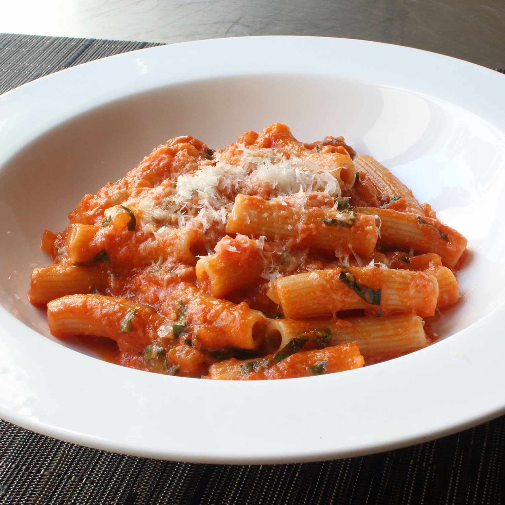

Rigatoni al Segreto

Description
Get ready for the best rigatoni recipe. This rigatoni al segreto recipe was the
most closely guarded secret at Gino's, one of New York City's most famous
Italian restaurants. When it closed, the recipe got out, but I think the amount of
butter was way too low, so here's my version.
Ingredients
- 4 tablespoons olive oil
- 1 cup diced onion
- 1 teaspoon salt, plus more to taste
- 2 cloves garlic, crushed (or more to taste)
- 1 pinch red pepper flakes
- 1 (28 ounce) can San Marzano (Italian) tomatoes, blended smooth
- ½ cup water (to rinse out can of tomatoes)
- 1 (8 ounce) package uncooked rigatoni pasta
- ½ cup fresh basil leaves, thinly sliced
- 4 tablespoons cold butter, cubed
- 1 cup grated Parmigiano-Reggiano cheese, plus more for serving
Steps
- Heat olive oil in a saucepan over medium-high heat. Add onion and salt.
Cook until no longer white and starting to turn translucent, about 5 minutes.
Stir in garlic; cook about 1 minute. Add red pepper flakes, then blended tomatoes
with water. Bring to a simmer; adjust heat to medium or medium-low.
Simmer gently, stirring occasionally, for 45 to 60 minutes. Reduce heat to low.
- Bring a large pot of lightly salted water to a boil. Cook rigatoni in the boiling
water, stirring occasionally until tender yet firm to the bite,
about 8 minutes (5 minutes from doneness).
- Add about 2/3 of the basil to the sauce. Stir in butter. When butter melts,
add cheese in 3 increments.
- Drain pasta; transfer to sauce. Stir until rigatoni are evenly coated with sauce.
Serve sprinkled with the remaining basil and a dusting of grated cheese.
Home